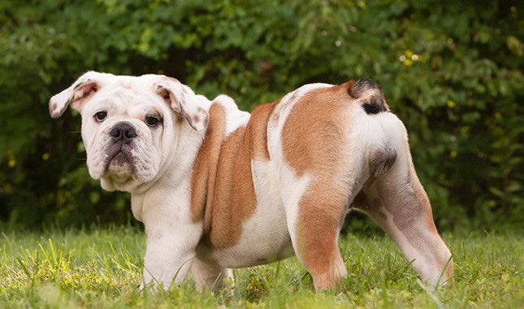
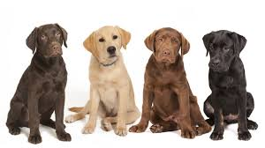

Top Five Most Popular Dogs In America
Here are the top five most popular dogs
The dog breed in 5th place has a geat nose for tracking. Can you guess what it is? Click here to find out!
It is the Beagle.Click here to hide.

The dog breed in 4th place are gruff and tough dogs given their size. Can you guess what it is? Click here to find out!
It is the Bulldog.Click here to hide.
The dog breed in 3rd place has long golden hair and are family dogs. Can you guess what it is? Click here to find out!
It is a Golden Retriever.Click here to hide.
The dog breed in 2nd place is commonly used as a police K-9 unit. Can you guess what it is? Click here to find out!
The most popular dog breed in America is used for hunting and they make great family dogs. Can you guess what it is? Click here to find out!
It is the Labrodor RetrieverClick here to hide.
